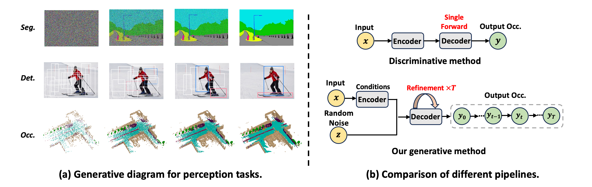

Introduction

(a) The generative diagram of semantic segmentation (seg.), object detection (det.), and 3D semantic occupancy prediction (occ.).
(b) Compared to previous discriminative methods with a single forward evaluation scheme, our OccGen is a generative model that can generate occupancy map in a coarse-to-fine manner.
(a) The generative diagram of semantic segmentation (seg.), object detection (det.), and 3D semantic occupancy prediction (occ.). (b) Compared to previous discriminative methods with a single forward evaluation scheme, our OccGen is a generative model that can generate occupancy map in a coarse-to-fine manner.
Method
The proposed OccGen framework. It has an encoder-decoder structure. The conditional encoder extracts the features from the inputs as the condition. The progressive refinement decoder consists of a stack of refinement layers and an occupancy head, which takes the 3D noise map, sampling step, and conditional multi-scale fusion features as inputs and progressively generates the occupancy prediction.
Conditional Encoder
The conditional encoder consists of three main components: a multi-modal encoder, a fusion module, and an occupancy backbone. As shown in the above figure, the multi-modal encoder is a two-stream structure, comprising of LiDAR and camera streams.
Progressive Refinement Decoder
The progressive refinement decoder of OccGen consists of a stack of refinement layers and an occupancy head. As illustrated in the above figure, the refinement layer takes as input the random noise map or the predicted noise map from the last step, the current sampling step $t$, and the multi-scale fusion features. The refinement layer utilizes efficient 3D deformable cross-attention and self-attention to refine the 3D Gaussian noise map.
Experimental Results

Semantic occupancy prediction results on nuScenes-Occupancy validation set. The C,D,L,M denotes camera, depth, LiDAR and multi-modal. Best camera-only, LiDAR-only, and multi-modal results are marked red, blue, and black, respectively. Observations show that OccGen outperforms all existing competitors, regardless of whether the camera-only, LiDAR-only, or multi-modal methods, which demonstrates the effectiveness of OccGen for semantic occupancy prediction.
Semantic Scene Completion results on SemanticKITTI validation set.} &dagger denotes the results provided by MonoScene. The results show that OccGen achieves the highest mIoU compared with all existing competitors.
Qualitative results of the 3D semantic occupancy predictions on nuScenes-Occupancy. The leftmost column shows the input surrounding images, and the following four columns visualize the 3D semantic occupancy results from the ground truth, CONet, OccGen(step1), and OccGen(step2). The regions highlighted by rectangles indicate that these areas have obvious differences (better viewed when zoomed in). It is obvious that the regions of ``drivable surface'' and ``sidewalk'' predicted by our OccGen have higher continuity and integrity, and can effectively reduce a large number of hole areas compared with CONet.
BibTeX
BibTex Code Here